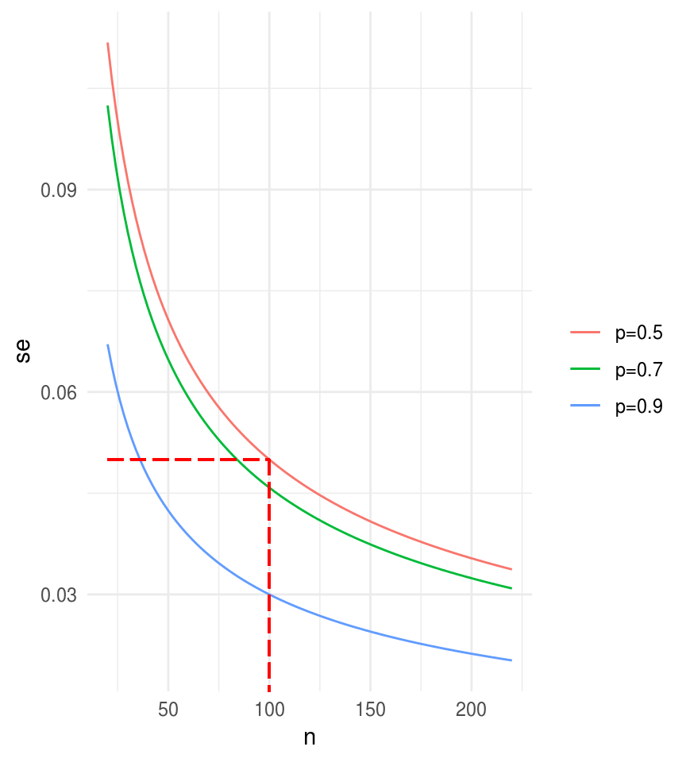
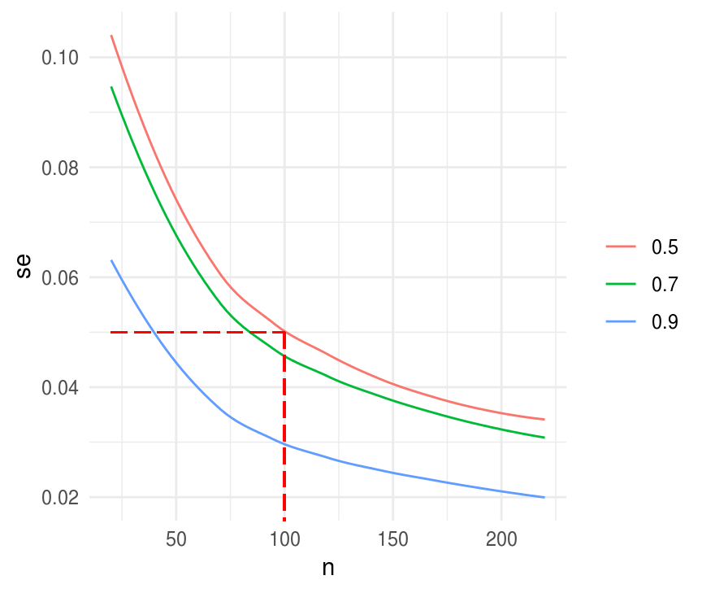
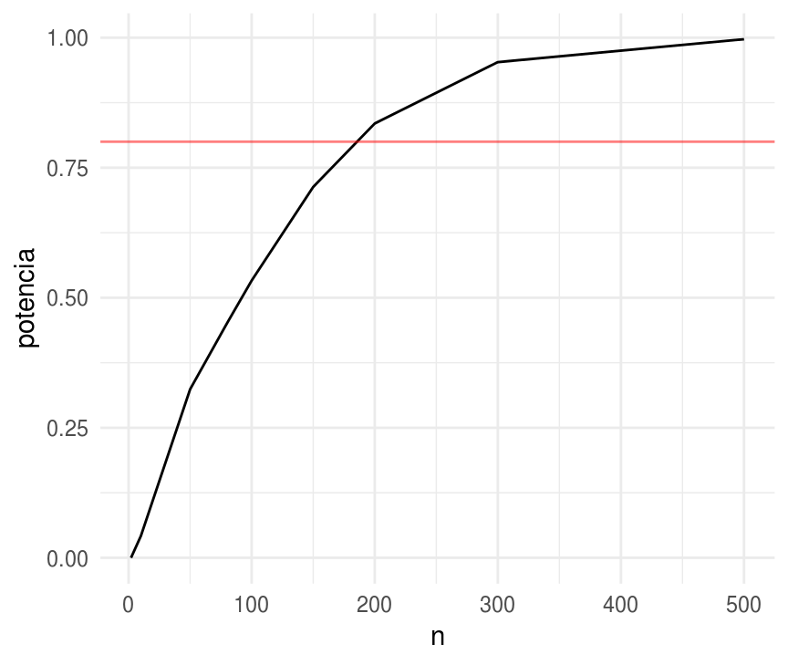
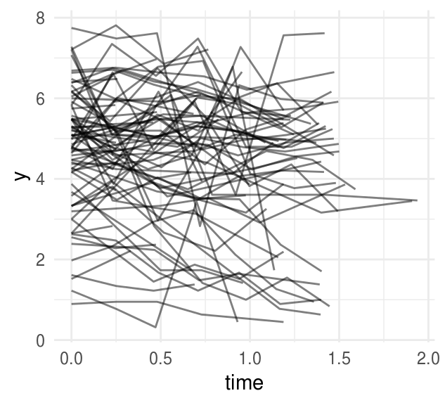

8.4 Simulación para cálculo de tamaño de muestra/poder estadístico
Cuando se esta diseñando un estudio se determina la precisión en las inferencias que se desea, y esto (junto con algunos supuestos de la población) determina el tamaño de muestra que se tomará. Usualmente se fija uno de los siguientes dos objetivos:
Se determina el error estándar de un parámetro o cantidad de interés. Por ejemplo, en encuestas electorales es típico reportar los resultados de esta encuesta más menos 3 puntos porcentuales tienen un nivel del 95% de confianza, cúantas personas se debe entrevistar para lograr esto?
Se determina la probabilidad de que un estadístico determinado sea estadísticamente significativo. Por ejemplo, cuando se hacen ensayos clínicos se determina un tamaño de muestra para que con probabilidad de \(x\)% se detecte una diferencia clinicamente relevante con el nuevo tratamiento (si es que este es efectivo).
En cualquiera de estos dos escenarios se necesita hacer supuestos para poder calcular el tamaño de muestra.
Tamaño de muestra para un error estándar determinado
Supongamos que queremos estimar el porcentaje de la población que apoya la pena de muerte. Sospechamos que la proporción es 60%, imaginemos que queremos una precisión (error estándar) de a lo más 0.05, o 5 puntos porcentuales. Bajo muestreo aleatorio simple, para una muestra de tamaño \(n\), el error estándar de la proporción \(p\) es \[\sqrt{p(1-p)/n}\] Sustituyendo nuestra expectativa \(p = 0.60\) llegamos a que el error estándar sería \(0.49/\sqrt{n}\), de tal manera que si queremos \(se(p) \le 0.05\) necesitamos \(n>96\), en el caso de proporciones es fácil determinar el tamaño de muestra de manera conservadora pues basta con suponer \(p = 0.5\).
se_fun_n <- function(n, p) sqrt(p * (1 - p) / n)
xy <- data.frame(x = 20:220, y = seq(0, 1, 0.005))
ggplot(xy, aes(x = x, y = y)) +
stat_function(fun = se_fun_n, args = list(p = 0.7), aes(color = "p=0.7")) +
stat_function(fun = se_fun_n, args = list(p = 0.9), aes(color = "p=0.9")) +
stat_function(fun = se_fun_n, args = list(p = 0.5), aes(color = "p=0.5")) +
labs(x = "n", y = "se", color = "") +
geom_segment(x = 20, xend = 100, y = 0.05, yend = 0.05, color = "red",
alpha = 0.3, linetype = "longdash") +
geom_segment(x = 100, xend = 100, y = 0.05, yend = 0, color = "red",
alpha = 0.3, linetype = "longdash")
Cómo calcularíamos el tamaño de muestra simulando? En este caso es trivial calcular de manera analítica pero conforme se aumenta complejidad en el diseño de la muestra o en el estadístico de interés también se complica encontrar una solución analítica.
sim_p_hat <- function(n, p, n_sims = 1000){
sim_muestra <- rbinom(n_sims, size = n, prob = p)
se_p_hat <- sd(sim_muestra / n)
data_frame(n = n, se_p_hat = se_p_hat, p = p)
}
sims_.7 <- map_df(seq(20, 220, 5), ~sim_p_hat(n = ., p = 0.7))
sims_.5 <- map_df(seq(20, 220, 5), ~sim_p_hat(n = ., p = 0.5))
sims_.9 <- map_df(seq(20, 220, 5), ~sim_p_hat(n = ., p = 0.9))
sims <- bind_rows(sims_.7, sims_.5, sims_.9)
ggplot(sims, aes(x = n, y = se_p_hat, color = factor(p), group = p)) +
geom_smooth(se = FALSE, size = 0.5) +
labs(x = "n", y = "se", color = "") +
geom_segment(x = 20, xend = 100, y = 0.05, yend = 0.05, color = "red",
alpha = 0.3, linetype = "longdash") +
geom_segment(x = 100, xend = 100, y = 0.05, yend = 0, color = "red",
alpha = 0.3, linetype = "longdash")
#> `geom_smooth()` using method = 'loess' and formula 'y ~ x'
Tamaño de muestra determinado para obtener significancia estadística con una probabilidad determinada
Supongamos que nuestro objetivo es demostrar que más de la mitad de la población apoya la pena de muerte, esto es \(p>0.5\), nuevamente tenemos la hipótesis que el verdadero valor es \(p=0.6\).
Una prueba de potencia típica tiene un poder de \(80\)%, es decir nos gustaría seleccionar \(n\) tal que el \(80\)% de los intervalos construidos con \(95\)% de confianza no incluyan \(0.5\). Para encontrar la \(n\) tal que el \(80\)% de las estimaciones estén al menos, \(1.96\) errores estándar por encima de \(0.5\) necesitamos que:
\[0.5 + 1.96 se \le 0.6 - 0.84 se\]
Sustituyendo \(se = 0.5/\sqrt(n)\) obtenemos \(n=196\)
Y simulando sería
sim_potencia <- function(n, p, n_sims = 1000){
sim_muestra <- rbinom(n_sims, size = n, prob = p)
se_p_hat <- sd(sim_muestra / n)
acepta <- (sim_muestra / n - 1.96 * se_p_hat) > 0.5
data_frame(n = n, potencia = mean(acepta))
}
sims <- map_df(c(2, 10, 50, 80, 100, 150, 200, 300, 500),
~sim_potencia(n = ., p = 0.6))
ggplot(sims) +
geom_line(aes(x = n, y = potencia)) +
geom_hline(yintercept = 0.8, color = "red", alpha = 0.5)
Veamos un ejemplo más interesante, tenemos medidas del sistema inmune (porcentaje de CD4 transformado con raíz cuadrada) de niños VIH positivos a lo largo de un periodo de 2 años. Las series de tiempo se ajustan de manera razonable con un modelo de intercepto y pendiente variable:
\[y_i \sim N(\alpha_{j[i]} + \beta_{j[i]}t_i, \sigma^2_y)\]
donde \(i\) indexa las mediciones tomadas al tiempo \(i\) en el individuo \(j[i]\).
# preparación de los datos
library(lme4)
allvar <- read.csv("data/allvar.csv")
cd4 <- allvar %>%
filter(treatmnt == 1, !is.na(CD4PCT), baseage > 1, baseage < 5) %>%
mutate(
y = sqrt(CD4PCT),
person = newpid,
time = visage - baseage
) La siguiente gráfica muestra las mediciones para cada individuo, podemos ver que las series de tiempo son ruidosas.
ggplot(cd4, aes(x = time, y = y, group = person)) +
geom_line(alpha = 0.5)
Veamos un ajuste usando la función lmer() del paquete lme4.
fit_cd4 <- lmer(formula = y ~ time + (1 + time | person), cd4)
fit_cd4
#> Linear mixed model fit by REML ['lmerMod']
#> Formula: y ~ time + (1 + time | person)
#> Data: cd4
#> REML criterion at convergence: 1096
#> Random effects:
#> Groups Name Std.Dev. Corr
#> person (Intercept) 1.329
#> time 0.680 0.15
#> Residual 0.748
#> Number of obs: 369, groups: person, 83
#> Fixed Effects:
#> (Intercept) time
#> 4.846 -0.468Notamos que las tendencias sobre el tiempo \(\beta\) tienen un promedio estimado en \(-0.5\) con desviación estándar de \(0.7\), es decir, estimamos que la mayoría de los niños tienen niveles de CD4 decrecientes, pero no todos.
Usaremos estos resultados para hacer calculos de potencia para una nueva prueba que busca medir el efecto del consumo de zinc en la dieta. Quisiéramos que el estudio fuera suficientemente grande para que con probabilidad de al menos \(80\)% la media del efecto del tratamiento sea significativo con un nivel de confianza del \(95\)%.
Necesitamos hacer supuestos del efecto del tratamiento y del resto de los parámetros que caracterizan el estudio. El análisis de arriba muestra que en los niños VIH positivos que no recibieron zinc los niveles de CD4 caían en promedio \(0.5\) al año. Suponemos que con el zinc reduciremos la caída a cero.
\[y_i \sim N(\alpha_{j[i]} + \beta_{j[i]}t_i, \sigma^2_y)\]
\[ \begin{eqnarray*} \begin{pmatrix}\alpha_{j}\\ \beta_{j} \end{pmatrix} & \sim & N\left[\left(\begin{array}{c} \gamma_0^{\alpha}\\ \gamma_0^{\beta}+\gamma_1^{\beta}z_j \end{array}\right), \left(\begin{array}{cc} \sigma^2_{\alpha} & \rho \sigma_{\alpha}\sigma_{\beta}\\ \rho \sigma_{\alpha}\sigma_{\beta} & \sigma^2_{\beta} \end{array}\right)\right] \end{eqnarray*} \]
donde
\[ z_j = \left\{ \begin{array}{lr} 1 & \text{si el }j \text{-ésimo niño recibió trataiento}\\ 0 & e.o.c \end{array} \right. \]
El tratamiento \(z_j\) afecta la pendiente \(\beta_j\) más no el intercepto \(\alpha_j\) pues el tratamiento no puede afectar en el tiempo cero. Usando los datos del ajuste de arriba tenemos que para el grupo control la pendiente será:
\(\gamma_0^{\beta} = -0.5\) y el efecto del tratamiento \(\gamma_1^{\beta} = 0.5\), el resto de los parámetros los especificamos de acuerdo al ajuste de arriba. Por simplicidad fijaremos la correlación \(\rho\) en cero.
El siguiente paso es determinar el diseño del modelo, suponemos que dividiremos a \(J\) niños VIH positivos en dos grupos del mismo tamaño, \(J/2\) de ellos recibirán el cuidado usual y \(J/2\) recibirán suplementos de zinc. Más aún suponemos que se medirá el porcentaje de CD4 cada 2 meses durante un año.
Usaremos simulación para determinar el tamaño de muestra \(J\) que se requiere para tener una potencia de \(80\)% si el verdadero efecto es \(0.5\), ¿cuál es el modelo gráfico asociado?
# cd4_sim simula del modelo con los supuestos que fijamos arriba
# podemos variar los valores de los parámetros para cambiar el escenario
cd4_sim <- function (J, K, mu.a.true = 4.8, g.0.true = -0.5, g.1.true = 0.5,
sigma.y.true = 0.7, sigma.a.true = 1.3, sigma.b.true = 0.7){
time <- rep(seq(0, 1, length = K), J) # K mediciones en el año
person <- rep (1:J, each = K) # ids
treatment <- sample(rep(0:1, J/2))
treatment1 <- treatment[person]
# parámetros a nivel persona
a.true <- rnorm(J, mu.a.true, sigma.a.true)
b.true <- rnorm(J, g.0.true + g.1.true * treatment, sigma.b.true)
y <- rnorm (J * K, a.true[person] + b.true[person] * time, sigma.y.true)
return (data.frame(y, time, person, treatment1))
}
# calcular si el parámetro es significativo para una generación de simulación
cd4_signif <- function (J, K){
fake <- cd4_sim(J, K)
lme_power <- lmer (y ~ time + time:treatment1 + (1 + time | person), data = fake)
theta_hat <- fixef(lme_power)["time:treatment1"]
theta_se <- summary(lme_power)$coefficients["time:treatment1", "Std. Error"]
theta_hat - 1.96 * theta_se > 0
}
# repetir la simulación de cd4 n_sims veces y calcular el porcntaje de las
# muestras en que es significativo el parámetro (el poder)
cd4_power <- function(n_sims, J, K){
rerun(n_sims, cd4_signif(J, K = 7)) %>% flatten_dbl() %>% mean()
}
# calculamos el poder para distintos tamaños de muestra, con 7 mediciones al año
potencias <- map_df(c(8, 16, 60, 100, 150, 200, 225, 250, 300, 400),
~data_frame(n = ., p = cd4_power(n_sims = 500, J = ., K = 7)))
#> Warning in checkConv(attr(opt, "derivs"), opt$par, ctrl = control
#> $checkConv, : unable to evaluate scaled gradient
#> Warning in checkConv(attr(opt, "derivs"), opt$par, ctrl = control
#> $checkConv, : Model failed to converge: degenerate Hessian with 1 negative
#> eigenvalues
#> Warning in checkConv(attr(opt, "derivs"), opt$par, ctrl = control
#> $checkConv, : unable to evaluate scaled gradient
#> Warning in checkConv(attr(opt, "derivs"), opt$par, ctrl = control
#> $checkConv, : Model failed to converge: degenerate Hessian with 1 negative
#> eigenvalues
#> Warning in checkConv(attr(opt, "derivs"), opt$par, ctrl = control
#> $checkConv, : unable to evaluate scaled gradient
#> Warning in checkConv(attr(opt, "derivs"), opt$par, ctrl = control
#> $checkConv, : Model failed to converge: degenerate Hessian with 1 negative
#> eigenvalues
#> Warning in checkConv(attr(opt, "derivs"), opt$par, ctrl = control
#> $checkConv, : unable to evaluate scaled gradient
#> Warning in checkConv(attr(opt, "derivs"), opt$par, ctrl = control
#> $checkConv, : Model failed to converge: degenerate Hessian with 1 negative
#> eigenvalues
ggplot(potencias, aes(x = n, y = p)) +
geom_hline(yintercept = 0.8, color = "red", alpha = 0.5) +
geom_line() + ylim(0, 1)
Notemos que la función cd4_rep() regresa la proporción de las simulaciones en
las que el resultado es estadísticamente significarivo, est es, la potencia
calculada con simulaicón, para un estudio con \(J\) niños medidos en \(K\) i
ntervalos igualmente espaciados.
Notemos también que en el límite, cuando \(J \to 0\) el poder es 0.025, esto es, con una muestra suficientemente chica el efecto del estimador es básicamente aleatorio y por tanto en \(2.5\)% de los casos el estimador está \(2\) desviaciones por encima de cero.
Una ventaja de usar simulación para calcular potencia es que nos permite flexibilidad, por ejemplo, es fácil calcular para más escenarios:
¿qué ocurriría si solo puedo medir 3 veces al año?
Se sabe que es común que algunos participantes abandonen el estudio, o no asistan a todas las mediciones, con simulación es fácil incorporar faltantes.